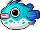
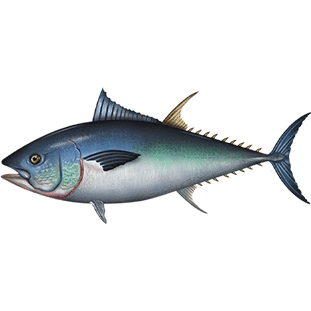
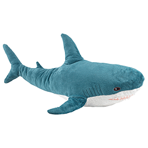

silly fish
this
is one silly fish! often found near
the surface, these fish are generally
considered stupid, a bit dumb, and not
very bright.
as such, humans generally leave these
guys alone. some silly fish enthusiasts
insist that these things are actually
super chill and misunderstood.
note: not to be confused with the
ever-popular fish of whimsy

poopa
this thing is called a poopa. and it is from
maplestory. so you know it is already
automatically freaking awesome coded.
they are known to be somewhat hostile to
those swimming near the surface, but
they really aren't much of a pushover
either.
maybe a little scary but like everything
else here, really just a cute guy
cirno
this is cirno, the ice fairy. somehow she
has found herself amongst the aquatic
life residing in this body of water...
is it an ocean? it's probably an ocean.
in any case, cirno is probably the
strongest fairy. not only this, she is also
possibly the smartest fairy. she
understands math to the point of adding
and subtracting fractions. which is neat.
think about it. she's probably the only
in this water that can do arithmetic!

bluefin tuna
this is a bluefin tuna. this is just a real
fish. apparently if they stop swimming,
they freaking DIE.
that is a CRAZY existence if you
think about it. you probably don't have
to think about it for very long, too. like,
yeah. i die if i dont swim. whose cruel,
cruel idea was this??
anyways this fish is also known for being
fished and being really big

shark
this is a shark. yes it is a REAL SHARK.
it is the cutest.
actually it is quite a popular shark. in
many respects, this is the shark to do it
all. this shark is an icon.
the label says shark but if you are being
technical, you could call it blåhaj! the
iconic and adorable blue shark plush toy
sold and manufactured by IKEA.
we love this little shark.